开心果 Need Car · 2023-05-06T18:15:00+08:00 · 微信原文
嵌入式开发，仿真环节至关重要。仿真，自然脱离不了仿真设备的使用，本文基于VN5650，讨论一下以太网的配置与使用。
本文使用软/硬件环境：CANoe 15.0，VN5650接口卡。
1、待仿真物理环境搭建
工程中，开发的节点（DUT：Device Under Test）支持Ethernet，开发过程中需要测试其通信状态。DUT、VN5650、监控设备之间的物理连接如下所示：
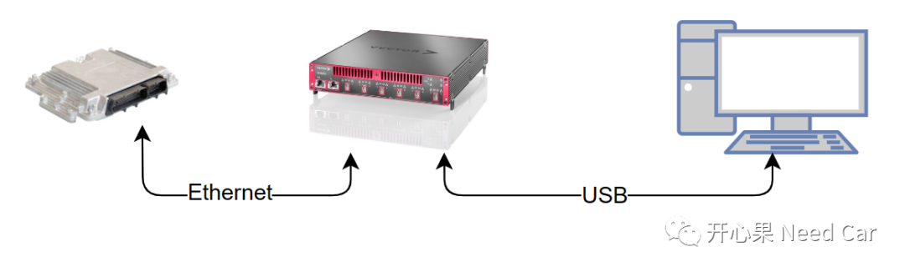
如上的连接，可以将VN5650看作交换机（Switch），最终形成网络结构如下所示：
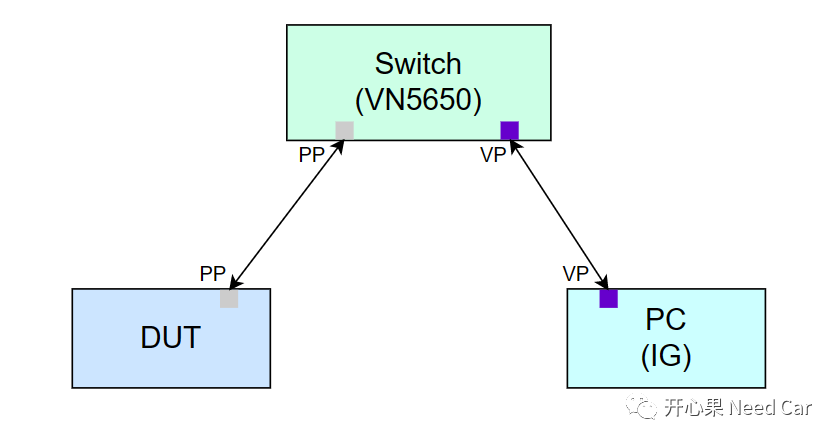
Switch提供的是二层交换机的功能，负责数据的转发，它可以连接多个PP（Physical Port）/VP（Virtual Port），但其中至少一个是PP。
提示：CANoe中的虚拟端口（VP），一般不需要用户手动添加，CANoe会根据用户创建的模块（如IG/CAPL节点）与Segment绑定情况自动添加。
2、CANoe配置
完成物理连接以后，进行CANoe配置，以便于以太网数据的监控和仿真。
（一）VN5650硬件网络（Network）配置
安装CANoe 15.0软件以及VN5650驱动以后，在开始菜单中可以找到"Vector Hardware Configuration"，如下所示：
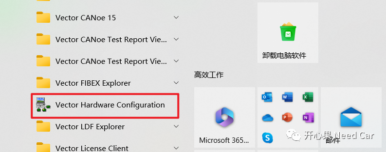
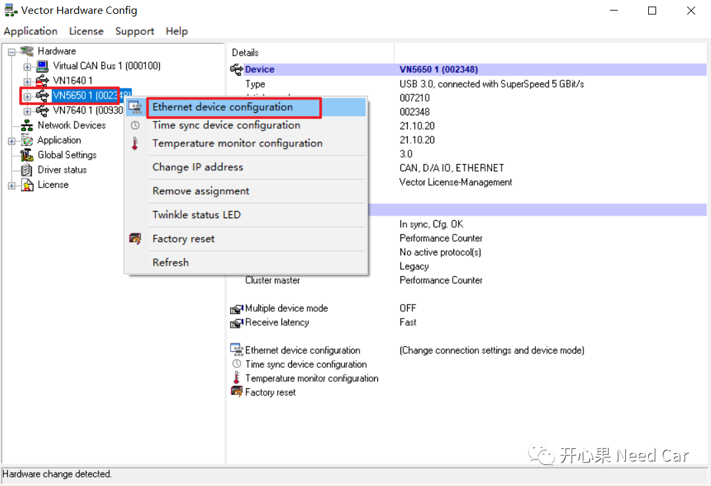
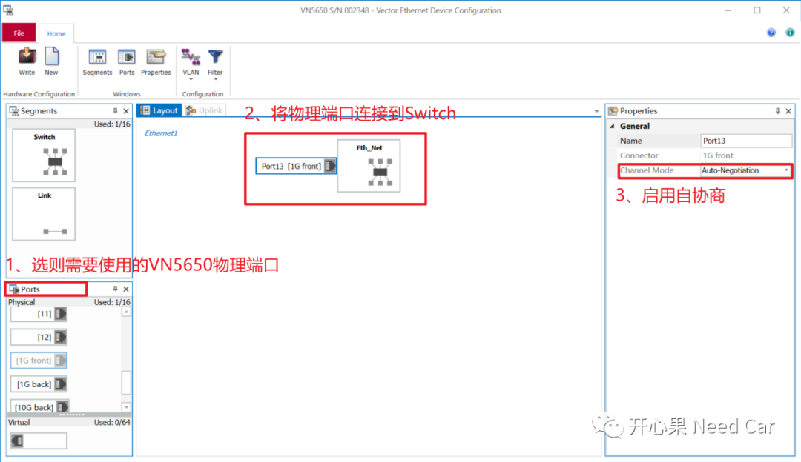
配置好网络以后，将配置好的网络下载到VN5650设备中，成功配置网络到VN5650后，提示如下：
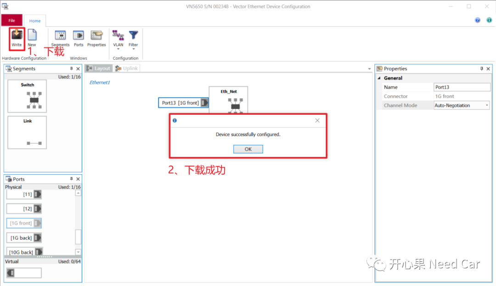
提示：配置好的Network信息可以保存为*.XML文件，方便复用。
（二）CANoe软件配置
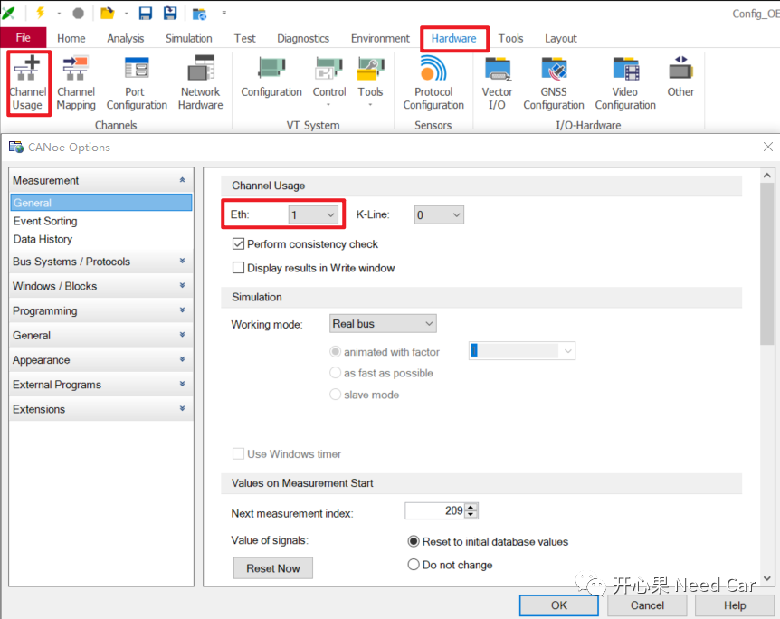
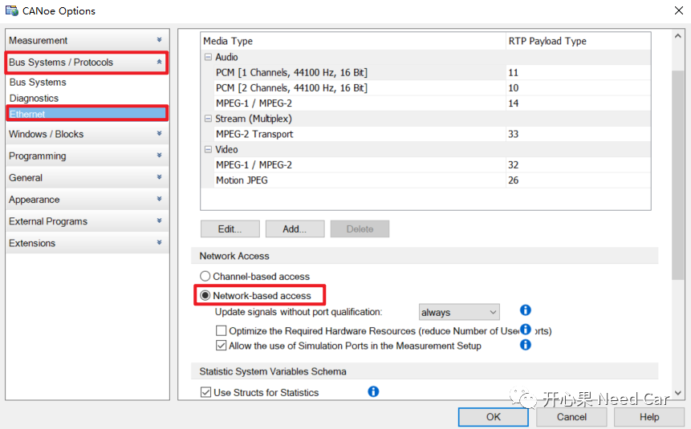
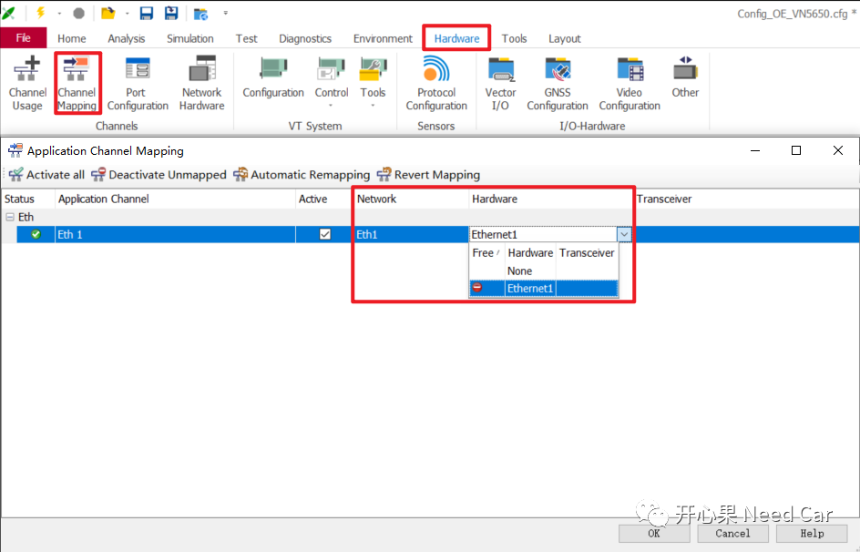
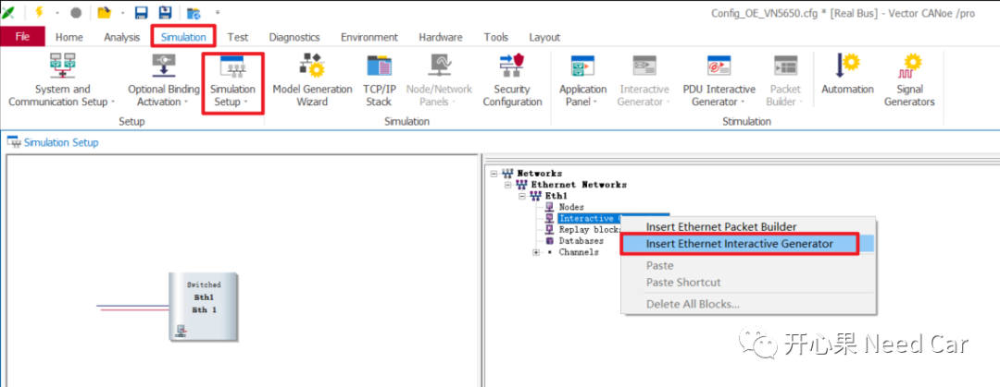
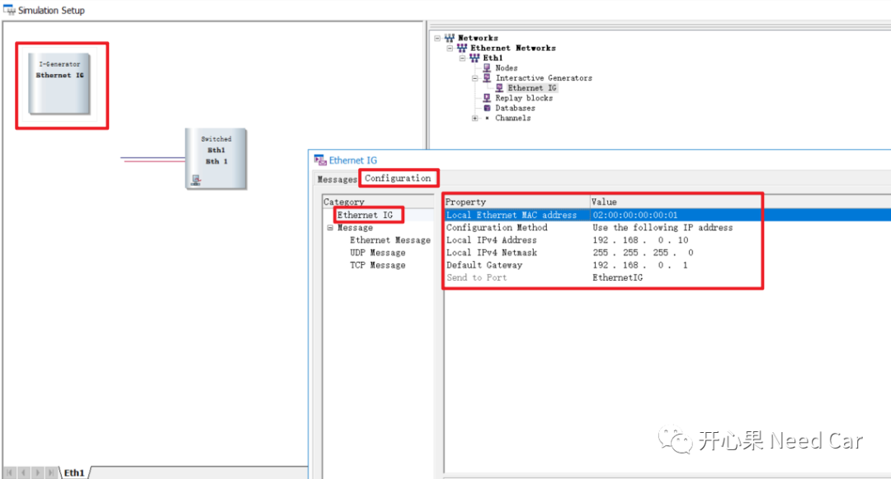
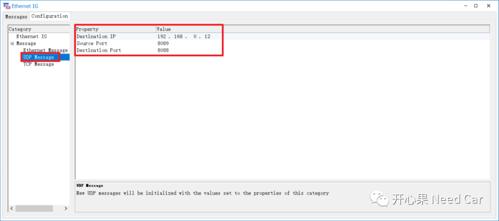
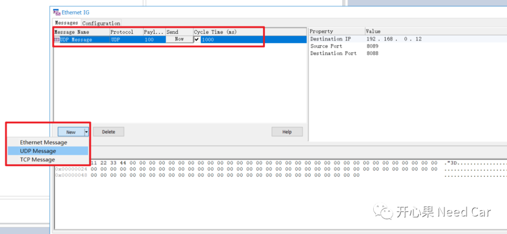
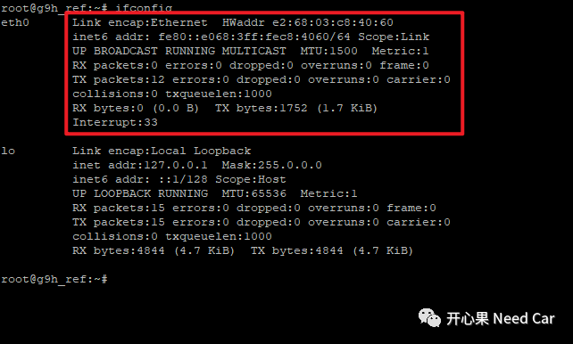
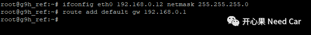
//配置网卡eth0的IPv4地址，网络掩码ifconfig eth0 192.168.0.12 netmask 255.255.255.0//配置默认路由地址route add default gw 192.168.0.1
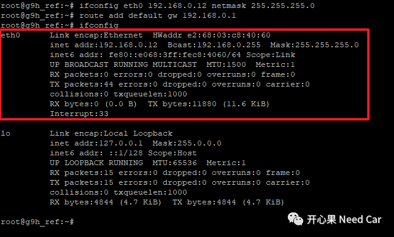
4、Hardware::Port Configuration配置
将配置的PP端口以及仿真端口使能，右击对应端口->Active，如下所示：
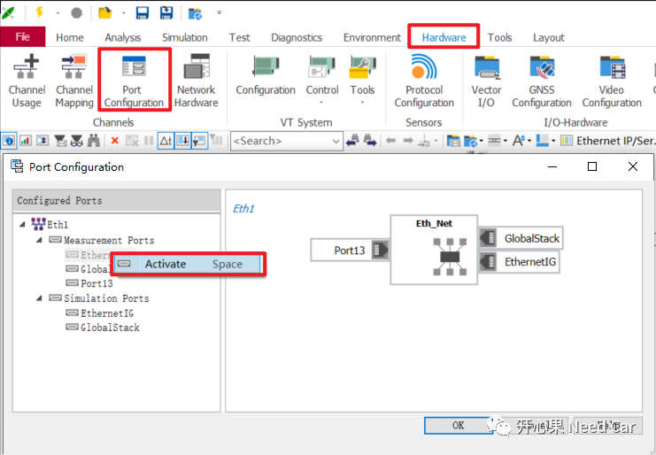
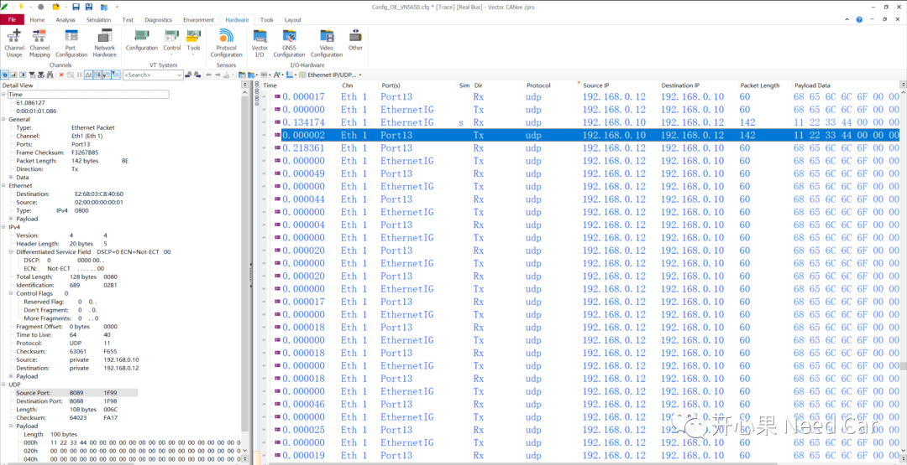
往期精彩回顾
从CAN Transceiver角度，理解两帧网络管理报文唤醒网络的原理
Bootloader开发：为什么需要SBL（Secondary Bootloader）?
Autosar EcuM：APP由RUN到POST_RUN浅析